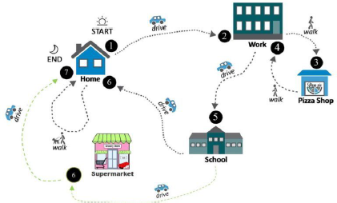

Uncovering Inequity in Travel in Florida
Team Members
- Nattakarn Surangsrirout
- Wattana Laosinwattana
- Subhash Gurappa
- Ravi Chandra Mathi
Project Summary

Motivation:
- Social Inequities in Transportation: Addressing disparities in travel behavior among different income groups.
- Impact on Daily Life: The role of transportation in employment, education, healthcare, and social activities.
- Importance of Analysis: Promoting social justice and equity through travel behavior analysis and transportation costs are the 2nd highest living costs and hit the low-income hardest.
Aims:
- Equity and Social Justice: Addressing travel behavior disparities to promote social equity.
- Temporal Trends: Analyzing income-based disparities over time using historical data.
- Modes of Transportation: Investigating transportation modes used by different income groups.
- Transportation Modes Used for Schools: Studying the impact of income levels on transportation choices for schools.
Results
- More car use with less financial burden in higher income, unlike lower income.
- Work trip analysis shows low-income groups use cars as their top choice.
- Low-income groups have to own cars due to Florida's urban sprawl geographic that making destinations inaccessible and insufficient public transport.
- When school buses are available, needs of cars reduce for school trips.
Suggestions:
- Government Intervention: Enhance public transportation connectivity and coverage.
- Solutions to First Mile/Last Mile Problems: Micro-Mobility (public bikes/e-scooters) and Go Connect (Miami-Dade's New Public Transit APP).
"A developed country is not a place where the poor have cars.
It's where the rich use public transportation."